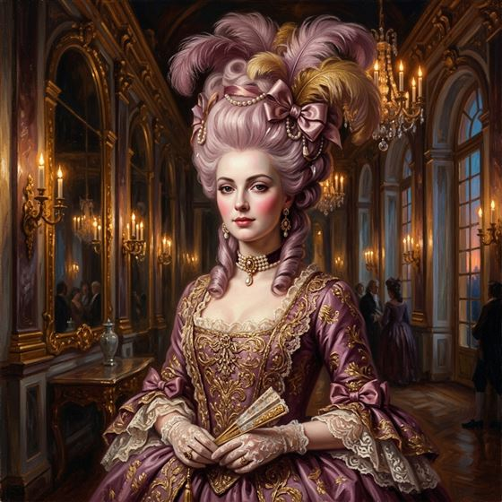
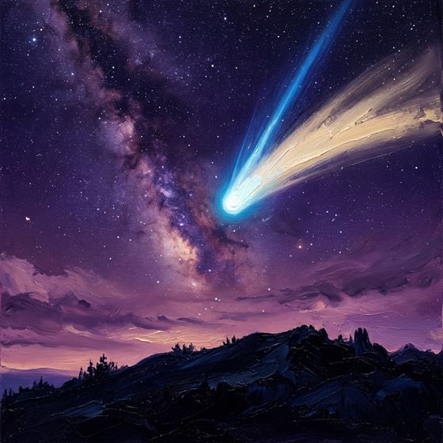
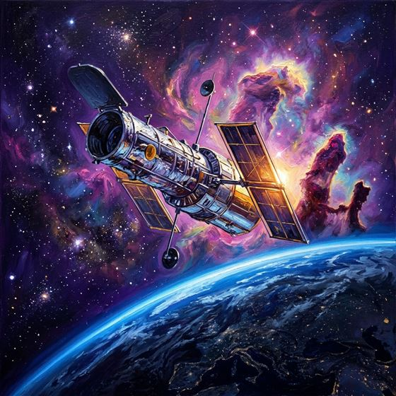
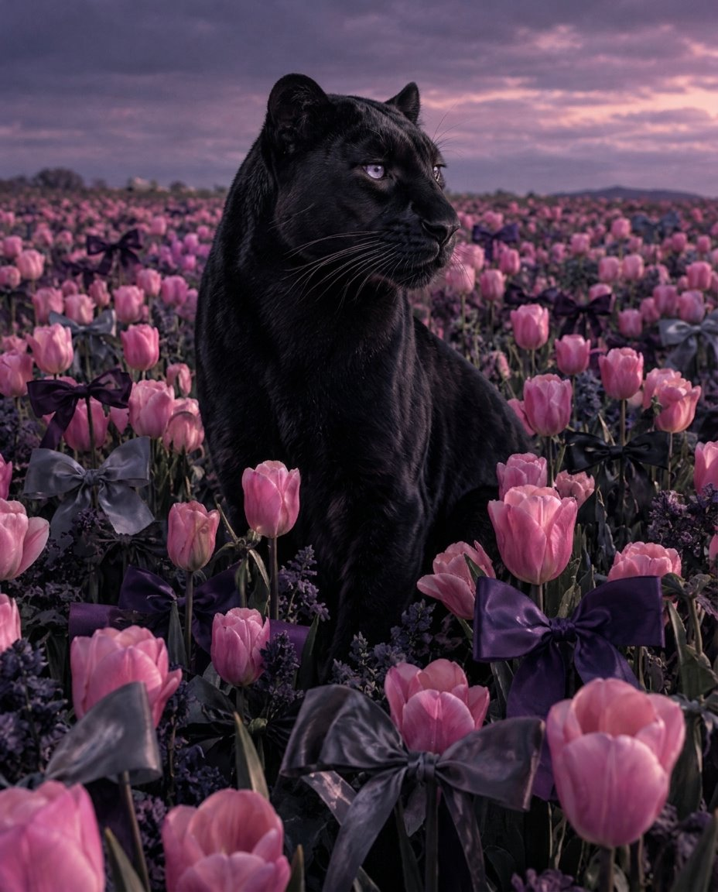

1755
workspace_premium
Reina de Francia
Marie Antoinette
Elegancia eterna, porte aristocrático y una presencia que trasciende los siglos.
Preparamos una celebración inmersiva con la majestuosidad de la pantera, tu bóveda celeste de Escorpio de 1997, tus canciones predilectas y un mensaje especial sobre nuestra amistad.
Gira tu teléfono en horizontal
Para una experiencia cinematográfica completa
Gira tu teléfono
El recorrido de Crystal está compuesto para verse en horizontal.

"Mi querida Crystal, que este día sea de mucha alegría para ti y para los que te quieren."
Pétalos de seda custodian el sendero: cada uno guarda un deseo para ti.
Lazos de satén atan los recuerdos más bonitos de tu historia.
Calma soberana: una fuerza que protege y una ternura que no necesita palabras.
"En la serenidad y firmeza de su mirada habita tu luz: intuición indomable, nobleza y una fuerza protectora inquebrantable."
Más allá del prado, el cielo de noviembre se tiñe de lila solo para ti.
Y en sus ojos, todo el edén vuelve a empezar.
Que florezca siempre en ti la paz, la dicha y la majestuosidad de este edén violeta.
"El 2 de Noviembre de 1997, el universo encendió una estrella irrepetible: Crystal."
Alfa Scorpii: la supergigante roja que rige tu fuerza espiritual, magnetismo genuino y pasión inquebrantable para proteger y cuidar con verdad a quienes amas.
El don escorpiano de sentir con profundidad absoluta, comprender con nobleza lo que no se dice y mantener una mirada digna frente a cada etapa del camino.
Como la pantera entre tulipanes violetas: calma soberana, belleza misteriosa y un espíritu libre que cautiva de forma silenciosa e inolvidable.
Grandes acontecimientos cósmicos y talentos nacidos en este mismo día de celebración.

Surcó el cielo nocturno como uno de los cometas más brillantes del siglo XX, con una estela radiante visible a simple vista durante 18 meses.

En 1997 el Hubble reveló imágenes nítidas de guarderías estelares y del nacimiento de estrellas en el espacio profundo.

Elegancia eterna, porte aristocrático y una presencia que trasciende los siglos.
Ilustraciones artísticas inspiradas en cada alma • Desliza o toca la línea del tiempo

Arrastra la tarjeta frontal o usa las flechas • Reproducción continua y sonido inmersivo
Mia & Sebastian's Theme (La La Land)
Justin Hurwitz • Melodía Central
Eres esa persona que siempre está conmigo. En cualquier momento sé que cuento con tu apoyo incondicional, y eso vale más de lo que las palabras alcanzan a expresar.
A pesar de la distancia física, lo que prevalece es nuestro querer de ambos. Los kilómetros existen, pero el lazo y el cariño mutuo siempre son más fuertes.
No llegó sola: la fuimos construyendo juntos día con día, con risas, confidencias, lealtad y apoyo mutuo. Es un tesoro invaluable que cuido y valoro profundamente.
Gracias por estar en los momentos en que se necesita apoyo. Y cuando quieras, siempre estaré contigo, my Jacki.